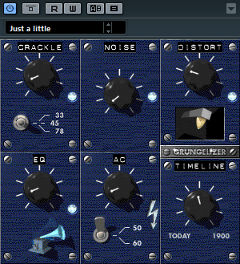

Use VSTGUI to design a User Interface
On this page:
- Part 1: Preparation
- Part 2: Open the VSTGUI/WYSWYG editor
- Part 3: Parameter Binding
- Part 4: Creating Custom Views
- Part 5: Showcase
This tutorial explains how to use VSTGUI. VSTGUI comes with a WYSIWYG editor that allows you to create stunning user interfaces for your plug-in.
Part 1: Preparation
If you have created your project with the VST 3 Project Generator and check the "Use VSTGUI" you can directly jump to Part 2 of this tutorial.
Before using the inline UI editor, you must make sure that you use the Steinberg::Vst::EditController class as a base of your own edit controller and that you have used the Steinberg::Vst::Parameter class or any subclass of it for your parameters. Otherwise the inline UI editor won't work properly.
Next you have to add vstgui to your project. For cmake users, you can just add the vstgui_support library to your target:
target_link_libraries(${target} PRIVATE vstgui_support)
If you are not using cmake, you have to manually include the following source files to your project:
- vstgui/vstgui_[ios/mac/linux/win32].[cpp/mm]
- vstgui/vstgui_uidescription.cpp
- vstgui/plugin-bindings/vst3editor.cpp
After that you have to alter your project settings to add a preprocessor definition to your debug build:
- VSTGUI_LIVE_EDITING=1
With cmake, this would look like this:
target_compile_definitions(${target} PUBLIC$<$<CONFIG:Debug>:VSTGUI_LIVE_EDITING=1>)
Finally, you have to modify your edit controller class to overwrite the createView() method:
#include "vstgui/plugin-bindings/vst3editor.h"
IPlugView* PLUGIN_API MyEditController::createView (FIDStringname)
{
if (strcmp (name, ViewType::kEditor) == 0)
{
return new VSTGUI::VST3Editor (this, "view", "myEditor.uidesc");
}
return 0;
}
Also make sure to include the vst3editor.h header.
Now you can build your plug-in and start your preferred VST 3 host to start designing your user interface.
Part 2: Open the VSTGUI/WYSWYG editor
If you now open your plug-in UI in your host, you will see a blank editor. To enter the UI editor, right-click on it and choose "Open UIDescription Editor".
After your first edits, you have to add the uidesc file you have saved to your project (already done if you have used VST 3 Project Generator). You also have to make sure to always build your project after changes to the uidesc file.
Part 3: Parameter Binding
If you've used the Parameter class provided by the VST 3 SDK, you get automatic parameter bindings between the controls of your editor and the parameters in your VST Edit Controller.
The only thing you need to do is to declare the IDs of the parameters as tags in the Tags editor (or use the 'Sync Parameter Tags' command in the Edit menu of the toolbar) and set the tags of your controls to these IDs. Your VST Edit Controller now receives the beginEdit(...)/performEdit(...)/endEdit(...) calls when the user changes the controls. If the host automates the parameter, the control also reflects these changes.
Additionally, you can modify your VST Edit Controller to return specific parameter objects in the getParameterObject(int32 paramID) method for UI only needs, which are not parameters of your VST audio processor. This way you can store view settings (like the tab which is open when the user closes the editor so that it can be restored when the user opens the editor again). You can look at the sources of the included 'uidescription test' project for more information on how this works.
Part 4: Creating Custom Views
If you need to create custom views, you can implement the VSTGUI::VST3EditorDelegate interface in your edit controller class. The createCustomView method is called if you set the 'custom-view-name' attribute in one of the views.
Another way to use your own views is to register them at runtime with the UIViewFactory. This method requires more work but has the advantage that the view is listed like the built-in views and changing attributes works on the fly. See VSTGUI::IViewCreator.
Part 5: Showcase
Here's an example video recorded while creating the new user interface for the famous Grungelizer plug-in of Cubase after it was ported from VST 2.4 to VST 3.

Create the VST 3 Grungelizer UI in 15 minutes with the UIDescriptionEditor of VSTGUI